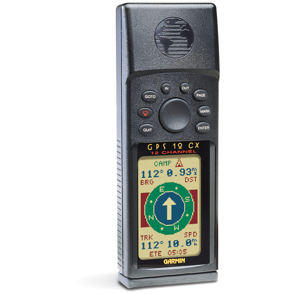

garmin gps 12 cx

100500 руб
Универсальный навигатор
черно-белый дисплей 2.66'
разрешение 64x100 пикс.
ПО: Garmin
водонепроницаемый корпус
питание от батареек AA
Число каналов приемника12
Теплый старт 15 с
Холодный старт 45 с
Элементы питания AA
Время работы 24 ч
Водонепроницаемый корпус есть
Габариты (ШхВхГ) 53x147x31 мм
Вес 269 г
Теплый старт 15 с
Холодный старт 45 с
Элементы питания AA
Время работы 24 ч
Водонепроницаемый корпус есть
Габариты (ШхВхГ) 53x147x31 мм
Вес 269 г
Вася
отлично
Петя
еще лучше
Гриша
Просто супер
отлично
Петя
еще лучше
Гриша
Просто супер